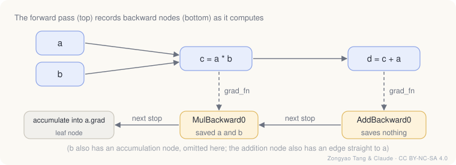
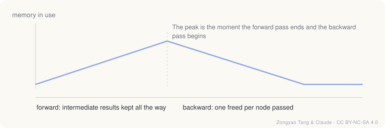

The thread: during the forward computation, each operator not only computes its result but also makes an entry in a ledger → backward() walks that ledger from the end back to the beginning → to be able to walk back, many intermediate results of the forward pass must be kept, which is the bulk of training memory → the formula for "how to walk back" through each operator is written down in one table → finally, a few situations that pause the ledger or cause errors. The DDP hooks of 7.1 and FSDP's backward prefetching both hang on this engine.
Part 2 · The PyTorch execution stack2.2 The autograd engine
Translated by AI (Anthropic's Claude) from the Chinese edition. The Chinese original is the reference.
This unit answersWhat does PyTorch actually do when you call backward()?
Follows backpropagation in 1.1 (the principle) and tensors in 2.1 (the data structure): this unit looks at how the framework automates backpropagation.
- In the forward pass, each operator records a "backward node" on the way, and the nodes form a graph
- backward() is one traversal of this graph: whichever node has all its upstream gradients goes next
- To go backwards, the forward pass's intermediate results must be kept: the bulk of training memory
- How to "walk back" through each operator is written in one table, and the code is generated from it
- Not recording, cutting, and changing what was recorded: no_grad, detach and in-place operations
Explanation
1In the forward pass, each operator records a "backward node" on the way, and the nodes form a graph
Whenever an input requires gradients, an operator, as it computes its result, also creates a node recording "how to compute when the backward pass comes back through me". This node hangs on the result tensor's grad_fn and points to the nodes that produced each of its inputs. As computation goes on, these nodes link into a graph pointing from the loss back to the parameters.
Take a minimal example:
a = torch.tensor(2.0, requires_grad=True) b = torch.tensor(3.0, requires_grad=True) c = a * b d = c + a
When
c = a * bruns, besides computing 6, three things happen:- A node is created, of type "backward of multiplication" (
MulBackward0). - The node saves what the backward pass will need. The derivative of multiplication is: the gradient for a = upstream gradient × b, the gradient for b = upstream gradient × a. So both a and b must be saved.
- The node records its next stops (
next_functions): where a and b each came from. a and b are "leaf" tensors created directly by the user; their source is a special kind of node whose job is to add the gradient it receives to.grad.
Then the node is hung on
c.grad_fn.
The graph recorded by the two lines of code in the example When
d = c + aruns, it happens again: a "backward of addition" node is created, whose next stops are c'sgrad_fn(the multiplication node) and a's accumulation node. The derivative of addition does not need the inputs' values, so it saves nothing.The result is a graph: start from
d.grad_fn, follownext_functions, and you reach every leaf that took part in the computation.Some key points.
- It is a backward graph. What is recorded is not "what the forward pass did" but "what the backward pass should do". The nodes are the functions to run in the backward pass.
- Whether to record depends on the inputs. When no input requires gradients, the operator creates no node and the result's
grad_fnis empty. So data preprocessing produces no graph. - Every forward pass builds the graph anew. The previous step's graph is thrown away after the backward pass. This is the "dynamic graph": its shape can differ at every step.
- Nodes save references to tensors. As long as the graph exists, the intermediate results it saved cannot be freed. This is the key to "why training takes so much memory" later.
Hands-on: looking at this graph from Python
You can touch this graph directly from Python, with no tools at all.
import torch a = torch.tensor(2.0, requires_grad=True) b = torch.tensor(3.0, requires_grad=True) c = a * b d = c + a print(d.grad_fn) # <AddBackward0 ...> print(d.grad_fn.next_functions) # ((<MulBackward0 ...>, 0), (<AccumulateGrad ...>, 0)) mul = d.grad_fn.next_functions[0][0] print(mul.next_functions) # two AccumulateGrad nodes: a and b print(mul._saved_self, mul._saved_other) # the a and b saved by the multiplication node print(a.is_leaf, c.is_leaf) # True False print(a.grad_fn) # None: a leaf has no grad_fn
A few things you can check yourself:
- Replace
awith a tensor that does not require gradients, andc.grad_fnbecomesNone. - Call
d.backward(), then accessmul._saved_self: an error says it has already been freed. That is "the graph is cleared after the backward pass". - After
d.backward(),a.gradis 4: 3 from the multiplication (b's value) and 1 from the addition, the two paths added together. This is the rule from 1.1: "a value used several times gets its gradient added several times".
For a real model,
loss.grad_fnis the entrance to this graph. Small tools (torchviz, for example) draw the whole graph by followingnext_functions; the principle is the lines above.An analogyLike keeping a running log while cooking: after each step, write a line in a notebook, "this step used these two things, done this way". When you finish, page back from the last line and you can reconstruct the whole process.
So the computation graph is not defined in advance; each forward pass "runs it out". Whichever branch this step took is the branch whose graph gets recorded. This is why PyTorch models can be written with Python's own if and for.
Builds on Backpropagation = the chain rule + bookkeepingA tensor = a piece of storage, plus a description of "how to read it"- A node is created, of type "backward of multiplication" (
- The ledger is kept. Now call backward() and watch the engine walk back along it.
2backward() is one traversal of this graph: whichever node has all its upstream gradients goes next
When loss.backward() is called, the engine starts from the loss's node. Each node must wait until every upstream edge pointing to it has delivered its gradient and they have been added up; executing it means calling the backward function it recorded, which computes the gradients to pass to each of its next stops. The engine is implemented in C++ and runs one worker thread per device.
Two phases.
Phase one: count dependencies. Starting from the root node (the loss's
grad_fn), traverse the whole graph and count how many edges point to each node, that is, how many gradients it must wait for.Phase two: execute. Keep a "ready queue" that starts with just the root node, whose input gradient is 1. Then loop:
- Take a node from the queue.
- Call its backward function: the input is the accumulated upstream gradient, the output is a gradient for each next stop.
- For each next stop: add the gradient to its input buffer and decrease its dependency count by one. When it reaches zero, all the gradients it was due have arrived; put it in the ready queue.
- If the next stop is a leaf's accumulation node, add the gradient to that parameter's
.grad.
When the queue is empty, the backward pass is done.
Why wait until the dependency count reaches zero. As 1.1 explained, a value used several times has a gradient that is the sum over all its paths. If a node ran with only part of its gradients, it would pass on something wrong. Wait until all upstream gradients have arrived and been added, then execute, and each node runs exactly once.
Where the engine runs. The engine is written in C++. It prepares one worker thread and one ready queue for the CPU and for each GPU. A node is executed by the thread of the device it lives on. The Python thread that called
backward()waits until the whole traversal is complete.For nodes on the GPU, "executing" means calling the corresponding operator, and what an operator does is put kernels on the GPU's task queue (asynchronously). So the backward pass's work on the CPU side is really the engine threads handing tasks to the GPU as fast as they can. "Waiting for orders" from 0.1, in the backward pass, refers to the speed of these threads.
Hooks hang here. Before and after executing a node, the engine calls any hook functions attached to it. DDP, in 7.1, attaches a hook to each parameter's accumulation node: each time the engine finishes a parameter's gradient, the hook is called, and DDP takes the chance to check "is this bucket complete". Tools such as gradient clipping and printing gradient norms use the same mechanism.
After the backward pass. By default each node frees its saved intermediate results as soon as it has executed, and the whole graph becomes unusable. So calling
backward()a second time on the same graph raises an error. If you really need two backward passes, passretain_graph=Truethe first time, at the cost of those intermediate results staying in memory.Source walkthrough: the engine's main loop
The file paths are from PyTorch 2.x; go by the version you have. Read the "background" in 2.1 first.
Coming in from Python.
Tensor.backward()is intorch/_tensor.py; it callstorch.autograd.backward()(torch/autograd/__init__.py), which tidies the arguments and enters C++.The core file:
torch/csrc/autograd/engine.cpp. Find these functions in this order:Engine::execute: the entry. Creates aGraphTaskobject (standing for "this backward call"), callscompute_dependenciesto count dependencies, then puts the root node in the ready queue.Engine::compute_dependencies: phase one, traversing the graph and counting each node's dependencies.Engine::thread_main: the worker thread's main loop. Takes tasks from theReadyQueueand callsevaluate_function.Engine::evaluate_function: executes one node. Calls the node's function to get the output gradients, then for each next stop "adds the gradient, decreases the dependency count, queues it at zero". The loop of phase two in the card above is this function.
The definition of a node:
torch/csrc/autograd/function.h. TheNodeclass. Look at three things in it:next_edges_(the next stops),apply(the backward function subclasses implement), and the lists of hooks.Where each operator's node is. These classes are generated.
tools/autograd/derivatives.yamlhas a derivative formula for each operator; at build timetorch/csrc/autograd/generated/Functions.cppis generated from it, containing functions likeMulBackward0::apply. To learn what an operator's backward actually computes, searchingderivatives.yamlfor its name is fastest.Read with these questions in mind:
- Where are the gradients from several upstream nodes added? (Search for
InputBuffer.) - Where are a node's saved intermediate results freed? (Search for
release_variables; it is controlled bykeep_graph, which corresponds to Python'sretain_graph.) - Why one thread per device, rather than a thread pool handing work out freely? (A device's tasks have to queue into the same CUDA stream anyway; sending from several threads is not faster, and needs synchronisation between threads.)
An analogyLike reports consolidated level by level in a company: a department waits until all its teams have handed in their numbers, adds them up, then reports upwards. Whoever has a complete set of material goes first.
So on the Python side the backward pass is a single call; the real execution happens in C++ threads. Python overhead is much smaller in the backward pass, but the engine's own scheduling overhead is still paid once per node.
Builds on In the forward pass, each operator records a "backward node" on the way, and the nodes form a graphA value used several times gets its gradient added several times- The previous card ended with "a node's saved intermediate results". They deserve a look of their own, because this is where the bulk of the memory is.
3To go backwards, the forward pass's intermediate results must be kept: the bulk of training memory
The derivatives of many operators need the inputs or outputs from the forward pass. So backward nodes keep references to these tensors, which can only be freed after the backward pass has gone through the node. A network has dozens of layers, each layer's output is held this way, and together they are the largest item in 2.1: the activations.
Which operators save something. Look at what appears in the derivative formula:
- Multiplication
c = a * b: the gradient for a needs b, the gradient for b needs a. Both inputs are saved. - Matrix multiplication, linear layers: the input is saved (needed for the weight gradient).
- ReLU: only needs to know which positions of the output are above zero, so saving the output is enough.
- Addition: the derivative is a constant; nothing is saved.
What is "saved" is a reference, not a copy. But as long as a reference exists, that tensor's storage cannot be freed.
When they are freed. The forward pass saves all the way through; the backward pass walks back from the last layer, and only when it has passed a node can that node's saved results be released. So memory use rises all through the forward pass and peaks at the moment the forward pass ends and the backward pass begins, then falls step by step as the backward pass proceeds. That is why 2.1 said "measure the peak with max_memory_allocated".

Measure memory at its peak, and the peak comes in the middle of a step Compare with inference. Inside
torch.no_grad(), operators create no nodes, so nobody saves these intermediate results. Layer k's input is referenced by no one once layer k is computed, and is freed at once. At any moment only one or two layers' activations are alive.Ways to cut this memory.
- Make each activation smaller. Mixed precision (store 16 bits instead of 32); a smaller batch or sequence length.
- Save less and recompute when needed. Activation checkpointing: split the model into segments; in the forward pass, save only each segment's input and keep nothing from inside it. When the backward pass reaches a segment, run that segment's forward again from its saved input, this time saving its intermediate results, and free them right after use. The price is one extra forward pass per segment, roughly a third more time; in return, activation memory drops from "proportional to the number of layers" to the order of "proportional to the square root of the number of layers". This is the standard example of "trading computation for memory" from 0.1; Flash Attention in 4.4, recomputing attention in the backward pass, uses the same idea.
- Write it in a way that needs no saving. Some operations can be done in place (the next card covers the limits).
A common leak. Write
total_loss += lossin the training loop andtotal_lossbecomes a tensor with agrad_fn, which through the graph references every intermediate result of every step. So no step's graph can be freed, and memory rises step by step until it overflows. The right way istotal_loss += loss.item()orloss.detach(): take the value only, without the graph.An analogyLike markers left on the way up a mountain: you plant a flag every stretch on the way up, and need them to find your way down, so you cannot pull them up early. The higher the mountain, the more flags.
So training memory grows with the depth of the network, while inference only needs to keep the current layer. There are only two kinds of ways to save this memory: make each "flag" smaller (low precision, a small batch), or plant fewer and walk a stretch again on the way down to fill in (recomputation).
Builds on backward() is one traversal of this graph: whichever node has all its upstream gradients goes nextTraining memory is five items: parameters, gradients, optimizer state, activations, cache and fragmentationFive ideas come back in every layer- Multiplication
- The engine only "calls each node's function in order". What each node actually computes is defined elsewhere.
4How to "walk back" through each operator is written in one table, and the code is generated from it
PyTorch has over a thousand operators, and each needs a backward node. These nodes are not written by hand: the derivative formulas of all operators are collected in one table, derivatives.yaml, and at build time a script reads it and generates, for each operator, its node class and the wrapper code that, in the forward pass, "creates the node, saves the inputs and links the next stops".
What the table says.
tools/autograd/derivatives.yamlhas one entry per operator, roughly like this:- name: mul.Tensor(Tensor self, Tensor other) -> Tensor self: mul_tensor_backward(grad, other, self.scalar_type()) other: mul_tensor_backward(grad, self, other.scalar_type())
How to read it: the gradient for input
selfis some quantity computed from the upstream gradientgradand the other inputother. Whichever inputs appear in the formula, the generator knows to save them in the forward pass.The formula here is not the "derivative" of a maths class but "given the upstream gradient, compute the gradient passed to this input". Mathematically it is the product of a vector and the Jacobian matrix. The benefit is that the huge Jacobian never has to be written out, only its product with a vector.
What is generated. For each entry the build script generates two things:
- A node class (such as
MulBackward0), whose body is the formula from the table. - A piece of wrapper code: before and after calling the real multiplication, decide whether gradients are needed, create the node, save the inputs, and hang the node on the output. This wrapper is the "autograd layer" that 2.3 covers, which an operator call passes through first.
What it means for the models you write.
- Any computation assembled from existing operators is automatically differentiable: each operator records its own node, and linked together they make the backward pass of the whole.
- You need to define a backward yourself only when using an operation autograd does not know (a CUDA kernel of your own, say), or when you want a cheaper backward formula than the one derived automatically: subclass
torch.autograd.Functionand write the two functionsforwardandbackward. Flash Attention in 4.4 is the second case; its backward pass is specially designed.
How to use it when reading the source. For questions like "why is this operator's gradient like this" or "does this operator save its input for the backward pass", look at this table. Which inputs it uses tells you what it saves; the helper functions the formulas call are in
torch/csrc/autograd/FunctionsManual.cpp.An analogyLike a cookbook and an assembly line that prepares ingredients by the cookbook: to know how a dish is made, you do not go into the workshop to watch the machines; you look it up in the cookbook.
So the fastest way to know how an operator's gradient is computed is to search this table for its name. Operations you assemble from existing operators need no derivative written; autograd chains the operators' derivatives together automatically.
Builds on In the forward pass, each operator records a "backward node" on the way, and the nodes form a graph- A node class (such as
- Finally, a few situations that change how recording works. They are common in everyday code, and error messages often have to do with them.
5Not recording, cutting, and changing what was recorded: no_grad, detach and in-place operations
no_grad makes every operator in a block of code create no node. detach gives a tensor that shares storage but is cut off from the graph. In-place operations (names ending in an underscore, such as add_) modify a tensor's content directly; if the modified tensor is being saved by some node for the backward pass, autograd notices in the backward pass and raises an error.
no_grad: no ledger for this block.
with torch.no_grad(): y = model(x)The operators inside create no nodes, and the results have no
grad_fn. Two benefits: the time of creating nodes is saved; more importantly, nobody saves intermediate results, so memory use is much smaller (previous card). Evaluation, inference and the optimizer's parameter update all run in this mode. There is also the more thoroughtorch.inference_mode(), which even skips the version counting described below; prefer it for inference.detach: take a tensor off the graph.
y = x.detach()gives aythat shares storage withx(it is a view, 2.1) but has nograd_fn, so gradients do not flow back through it. Uses: treating an intermediate result as a constant; taking out the loss's value for logging without holding on to the whole graph.In-place operations and the version counter. Every tensor has a version number, increased by one each time it is modified in place. When a node saves a tensor, it also records its version number at that moment. When the backward pass reaches the node, if the version number has changed, the saved data is no longer the value from the forward pass, and a gradient computed from it would be wrong. autograd then raises an error at once, with "modified by an inplace operation" in the message.
For example:
a = torch.randn(3, requires_grad=True) b = a * 2 c = b * b # the multiplication node saves b b.add_(1) # modifies b in place: its version goes up by one c.sum().backward() # error
This check protects you: without it, the gradient would quietly be wrong. When you see this error, change the in-place operation into an ordinary one (
b = b + 1), at the cost of one more temporary tensor.When in-place operations are safe. When the modified tensor is not saved by any node. ReLU, for example, saves its output, so
relu_can safely be done in place; the optimizer modifies parameters in place insideno_grad, when the graph has already been used up.Views make it more complicated. A view shares storage with the original tensor, and shares its version number too. Modify one in place and the other's version changes as well. So sometimes the error points at a tensor you never changed directly; what you changed was one of its views.
An analogyBack to the cooking log: no_grad means not writing this part down; detach means crossing something off the log, so where it goes afterwards has nothing to do with the log; an in-place operation means secretly swapping the jar the log says "3 spoonfuls were taken from", so reconstructing from the log no longer matches.
So wrap inference and evaluation in no_grad, saving time and memory; to use a value as a constant, detach it; in-place operations save memory, but autograd checks whether they destroyed data the backward pass needs.
Builds on To go backwards, the forward pass's intermediate results must be kept: the bulk of training memoryView, transpose and slicing change only the description, not the data
Putting it together
In the forward pass each operator creates a backward node (grad_fn); the nodes link into a graph and save the intermediate results the backward pass will need. backward() is run by the engine, in C++, executing these nodes in dependency order. Saved results are freed only after the backward pass has used them, which is why training takes more memory than inference. Each operator's derivative formula is in derivatives.yaml, and the nodes' code is generated from it. no_grad keeps no ledger, detach cuts the graph, and in-place modification of a saved tensor is caught by the version counter.
Test yourself
Without looking back at the explanation, say it in your own words.
- What does autograd record for each operator during the forward computation? What are grad_fn and next_functions?
- In what order does the autograd engine execute the backward nodes? Why must a node wait until its "dependency count reaches zero"?
- Why can the intermediate results of the forward pass not be freed right away during training? What ways are there to reduce this memory?
- Where is each operator's derivative defined in PyTorch? How does it become an executable backward node?
- What is the difference between torch.no_grad() and detach()? Why do in-place operations sometimes make the backward pass fail?